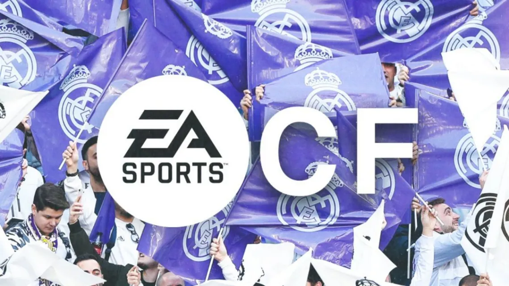

Noticias
FIFA cambia de Nombre a EA Sports FC en 2023
FIFA 23 sera el ultimo Electronic Arts. A partir de julio de 2023, comenzará a ser denominado por otro nombre. EA Sports FC es el título elegido para la “la nueva era” del videojuego.
“Después de casi 30 años creando experiencia de fútbol interactivo que definieron el género, pronto comenzará una nueva era emocionante”
“El año que viene, EA Sports FC se convertirá en el futuro del fútbol de EA Sports. Junto a nuestras más de 300 licencias a través del deporte, estamos listos para llevar las experiencias globales del fútbol a nuevas alturas, en nombre de todos los aficionados del fútbol alrededor del planeta”.
Cam Weber, vicepresidente ejecutivo y manager general de EA Sports.
Más información en...